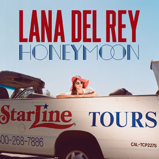

¡Bienvenidos a la página de Lana Del Rey!
Descubre todo sobre esta talentosa cantante y compositora estadounidense.
¿Quién es Lana del Rey?
|  | Lana del Rey es una cantante, compositora, conocida por su estilo musical que toma referencias de la cultura pop en Estados Unidos durante los años 50 y 60. Sus letras resaltan el glamour, el romance trágico, la nostalgia y la melancolía, resultando en canciones de naturaleza cinematográfica. Ha vendido más de 19 millones de álbumes alrededor del mundo, ha sido nominada a los Globos de Oro y cuenta con seis nominaciones a los premios Grammy. |
Elizabeth Woolridge Grant (Nueva York, 21 de junio de 1985),conocida artísticamente como Lana Del Rey, es una cantante, compositora, modelo, actriz, escritora y productora estadounidense. Su música se destaca por su estilizada calidad cinematográfica, su estilo retro y la exploración del romance trágico, el glamur y la melancolía, con frecuentes referencias a la cultura pop contemporánea y la estadounidense de los años 1950 y 1960